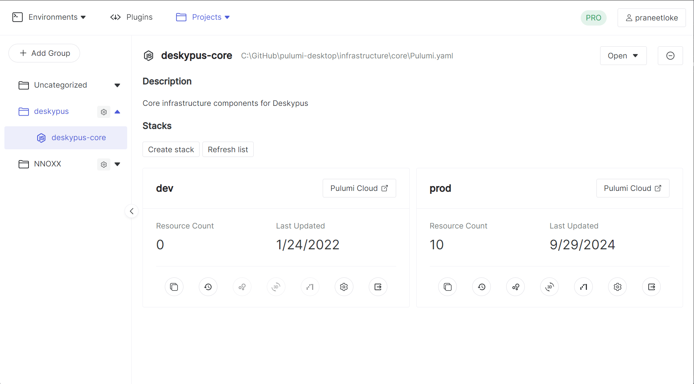
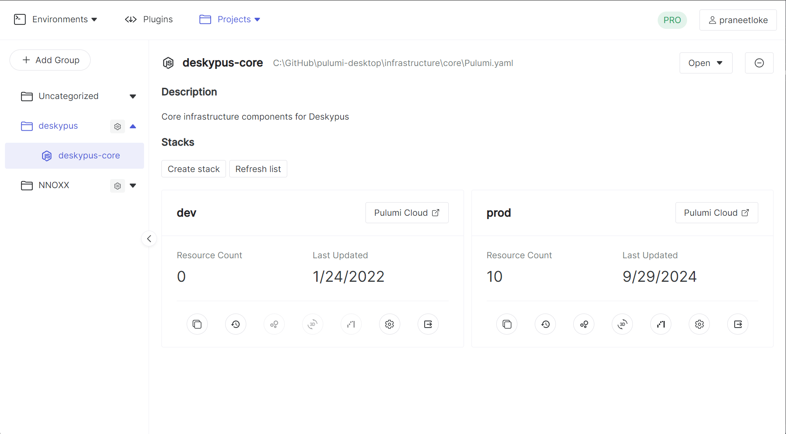
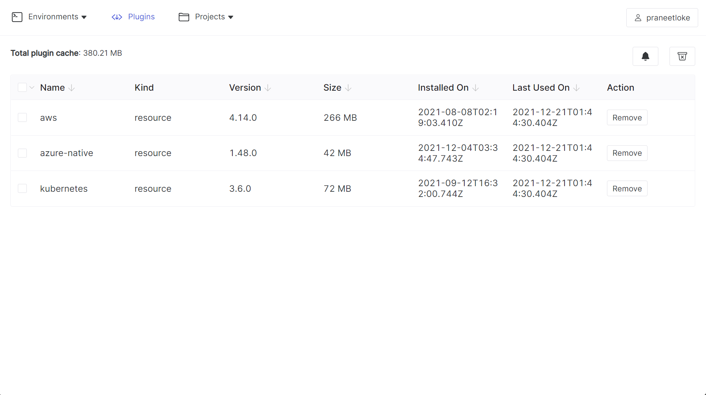
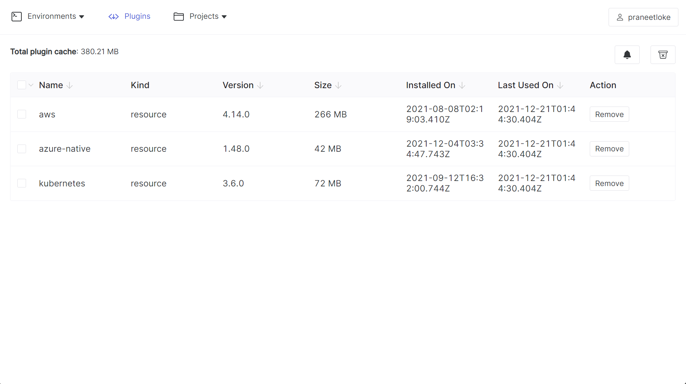
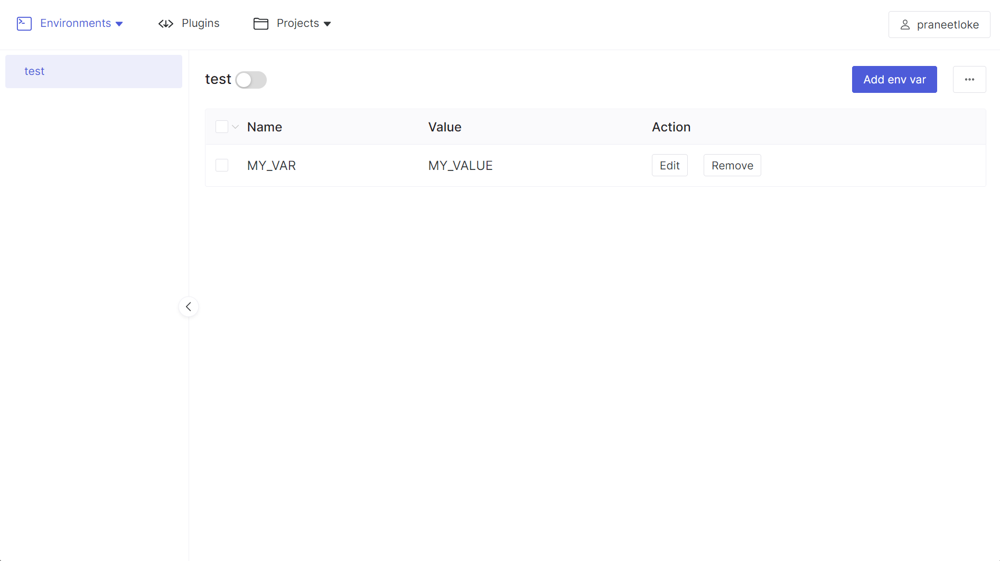
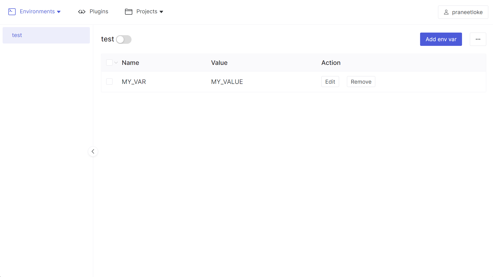

Features
Add your Pulumi projects to the workspace and access everything about them quickly and easily, without having to juggle terminal tabs and running several commands.
 

 

Manage Plugins
Keep track of the space used by plugins on your machine. Get notified when the space used by the plugins cache crosses a threshold. Take back what's yours.
Environments
Create environments each with their own environment variables so you can seamlessly switch between environments with the variables automatically initialized in your default shell.
 



Switch Accounts
Use multiple self-managed backends? Switch accounts quickly and explore the stacks in multiple projects easily.
Deeplink
Deeplink is a browser extension that allows you to clone/open a Pulumi project right from app.pulumi.com onto your desktop.